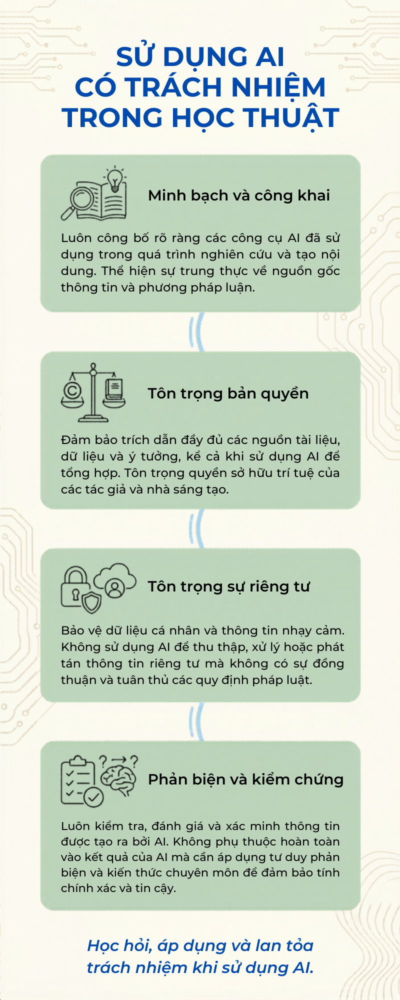
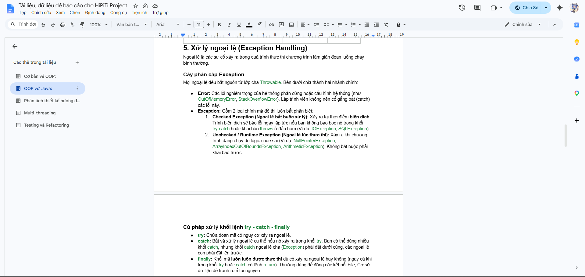

Sử dụng AI có Trách nhiệm & Đạo đức
Nghiên cứu chính sách trường đại học về AI, thực hành với nhiệm vụ học tập thực tế, phân tích vấn đề đạo đức và xây dựng bộ nguyên tắc cá nhân.
🏛️ Nghiên cứu chính sách sử dụng AI của Trường Đại học
Phân tích và so sánh chi tiết chính sách về Trí tuệ nhân tạo của Đại học Bách khoa Hà Nội với các trường đại học khác tại Việt Nam:
Sự thừa nhận & Khuyến khích sử dụng
Nhà trường công nhận AI (ChatGPT, Claude, Copilot) là công cụ hỗ trợ học tập hợp lệ. Sinh viên được khuyến khích khai thác AI để brainstorming, tìm kiếm tài liệu gợi ý hoặc sửa lỗi lập trình/ngữ pháp nếu sử dụng đúng cách.
Quy định về Tính minh bạch (Transparency)
Bắt buộc sinh viên phải khai báo và trích dẫn rõ ràng khi có sự hỗ trợ của AI trong bất kỳ sản phẩm học thuật nào (bài tập lớn, đồ án, luận văn, bài báo khoa học). Phụ lục prompt là bắt buộc.
Hành vi bị Nghiêm cấm
Nghiêm cấm sao chép nguyên văn (copy-paste) đầu ra của AI và nộp dưới danh nghĩa bài làm tự thân. Hành vi này xếp vào nhóm "gian lận học thuật" và bị xử lý kỷ luật theo Quy chế đào tạo hiện hành.
| Tiêu chí so sánh | ĐH Bách khoa Hà Nội | ĐH Quốc gia TP.HCM | ĐH RMIT Việt Nam |
|---|---|---|---|
| Mức độ cởi mở | Khuyến khích có kiểm soát & minh bạch. | Thận trọng, chủ yếu bài thực hành CN. | Rất cởi mở, có AI Framework chi tiết cho từng cấp độ môn học. |
| Quy định trích dẫn | Yêu cầu ghi rõ công cụ, mục đích và phụ lục prompt. | Khai báo chung trong danh mục tài liệu tham khảo. | Chuẩn APA 7th / Harvard cập nhật riêng cho AI. |
| Biện pháp kiểm soát | Turnitin AI Detector + vấn đáp trực tiếp. | Công cụ rà quét nội bộ + đánh giá của GV. | Turnitin AI + thay đổi hình thức đánh giá định kỳ. |
| Phạm vi áp dụng | Toàn bộ sản phẩm học thuật. | Chủ yếu bài tập thực hành. | Phân cấp theo từng loại môn học và cấp độ. |
"Chính sách của ĐHBKHN mang tính thực tiễn cao, không 'cấm đoán cực đoan' mà chọn cách 'quản lý và định hướng'. Điều này giúp sinh viên không bị tụt hậu về mặt công nghệ, đồng thời giữ vững được liêm chính học thuật."
✅ Điểm mạnh của chính sách
- → Không ngăn cản sinh viên tiếp cận công nghệ mới.
- → Dạy kỹ năng sử dụng AI đúng cách thay vì cấm cản.
- → Cơ chế kiểm tra đa lớp (phần mềm + vấn đáp) đảm bảo độ tin cậy.
⚠️ Điểm cần hoàn thiện
- → Ranh giới "AI hỗ trợ" vs "AI viết hộ" cần tiêu chí định lượng rõ hơn.
- → Cần hướng dẫn cụ thể theo từng loại môn học và đồ án.
- → Cập nhật định kỳ khi các mô hình AI mới xuất hiện.
💬 Nhật ký tương tác với AI — Nhiệm vụ thực tế
Nhiệm vụ được chọn: Viết bài luận về "Tác động của chuyển đổi số đối với doanh nghiệp vừa và nhỏ (SMEs) tại Việt Nam".
Lượt tương tác 1: Lên khung sườn (Brainstorming)
Chủ đề: Tác động của chuyển đổi số đối với SMEs tại Việt Nam | Dung lượng: 1000 từ | Góc nhìn: Chuyên gia kinh tế
I. Mở đầu: Bối cảnh kinh tế số, tại sao SMEs cần chú ý...
II. Tác động tích cực: Tiếp cận thị trường, tối ưu vận hành, nâng cao năng lực...
III. Thách thức: Chi phí đầu tư, nhân lực, bảo mật dữ liệu...
IV. Kết luận & Khuyến nghị: Chính sách hỗ trợ, lộ trình triển khai...
🔍 Cách đánh giá, chỉnh sửa & tích hợp đầu ra AI
Khung dàn ý logic và bao quát. Tuy nhiên các luận điểm còn mang tính lý thuyết, chưa cập nhật số liệu thực tế Việt Nam 2025–2026 và thiếu ví dụ doanh nghiệp cụ thể.
Giữ lại bộ khung của AI nhưng lược bỏ phần lý thuyết rườm rà. Tự tìm kiếm và bổ sung số liệu từ các báo cáo chính thống để đưa vào bài làm.
Tự viết 100% nội dung chi tiết dựa trên dàn ý đã hiệu chỉnh. Đầu ra của AI chỉ là "chiếc la bàn định hướng tư duy", hoàn toàn không sao chép nguyên văn câu từ của AI.
📖 Trích dẫn AI minh bạch (Chuẩn APA 7th cho AI)
OpenAI. (2026). ChatGPT (Phiên bản GPT-4o) [Mô hình ngôn ngữ lớn]. Hỗ trợ xây dựng cấu trúc dàn ý bài luận về chuyển đổi số SMEs ngày 15/05/2026. Phản hồi thu được từ mã nguồn prompt cá nhân.
⚖️ Phân tích vấn đề Đạo đức AI trong Học thuật
Ranh giới giữa Hỗ trợ hợp lý và Gian lận học thuật
- → Dùng AI giải thích khái niệm khó, làm rõ thuật ngữ.
- → Tìm lỗi sai trong code, gợi ý cách sửa.
- → Gợi ý cấu trúc/dàn ý cho bài viết.
- → Brainstorming ý tưởng ban đầu.
- → Kiểm tra ngữ pháp và văn phong sau khi đã viết xong.
- → AI viết hộ từ đầu đến cuối bài luận/báo cáo.
- → Để AI giải hộ bài tập rồi sao chép lại nguyên văn.
- → Không khai báo việc sử dụng AI với giảng viên.
- → Biến tri thức nhân tạo thành sản phẩm "cá nhân" giả tạo.
- → Không xác thực thông tin do AI cung cấp trước khi nộp.
📚 Vấn đề Quyền sở hữu trí tuệ
AI được huấn luyện từ hàng tỷ tài liệu có bản quyền. Khi AI tạo ra câu trả lời, nó không tự động dẫn nguồn. Lạm dụng AI mà không kiểm tra nguồn gốc có thể dẫn đến "đạo văn gián tiếp". Thiết lập quy chuẩn trích dẫn AI rõ ràng là bắt buộc.
🧠 Tác động đến quá trình học tập
Tích cực:
Tăng tốc học, cá nhân hóa lộ trình, rèn kỹ năng đặt câu hỏi phản biện.
Nguy cơ:
Hội chứng "lười tư duy", mất khả năng viết độc lập, "ảo tưởng tri thức" — biết copy-paste nhưng không hiểu thực sự.
📜 Bộ 6 Nguyên tắc Cá nhân — Sử dụng AI có Trách nhiệm
Đây là bộ nguyên tắc tôi tự xây dựng và cam kết tuân thủ trong suốt quá trình học tập:
Nguyên tắc Chủ quyền Tư duy
Tôi là người chịu trách nhiệm chính cho sản phẩm học thuật của mình. AI chỉ là người trợ lý, không phải là tác giả. Mọi quyết định cuối cùng đều do tôi đưa ra và chịu trách nhiệm.
Nguyên tắc Minh bạch Tuyệt đối
Luôn khai báo thành thật về việc sử dụng AI: công cụ gì, hỗ trợ phần nào, và các câu lệnh (prompts) đã dùng — ghi rõ trong phần phụ lục của bài làm.
Nguyên tắc Xác thực Thông tin (Fact-check)
Không bao giờ tin tưởng hoàn toàn vào các số liệu, nguồn dẫn do AI cung cấp. Mọi thông tin từ AI đều phải đối chiếu lại với tài liệu khoa học hoặc nguồn chính thống.
Nguyên tắc Nói không với Sao chép
Không sao chép nguyên văn đoạn văn do AI tạo ra để nộp bài. Mọi ý tưởng từ AI phải được diễn đạt lại (paraphrase) bằng ngôn ngữ, tư duy và góc nhìn của chính bản thân.
Nguyên tắc Bảo mật Dữ liệu
Không tải lên công cụ AI công cộng những tài liệu nội bộ, thông tin cá nhân của giảng viên, bạn học hoặc dữ liệu nghiên cứu chưa công bố của nhà trường.
Nguyên tắc Phát triển Kỹ năng bền vững
Chỉ sử dụng AI sau khi đã tự suy nghĩ và cố gắng tìm giải pháp. Không dùng AI để đi đường tắt nhằm né tránh rèn luyện kỹ năng cốt lõi: đọc, viết, tính toán, tư duy phản biện.
📸 Hình ảnh minh chứng

